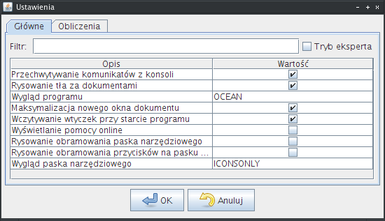
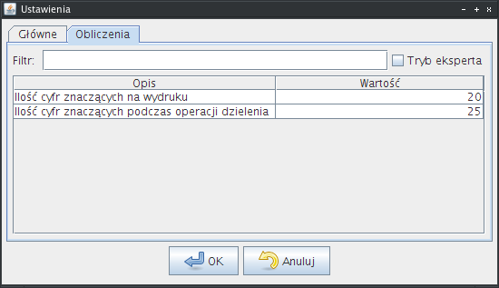

Ustawienia programu
Dialog ustawień programu można wyświetlić wybierając pozycję
Ustawienia z menu Narzędzia lub za pomocą skrótu klawiaturowego
CTRL-P.
Opcje programu zostały podzielone na zakładki, odpowiadające
różnym zakresom funkcjonalnym.
W celu ułatwienia orientacji w rosnącej liczbie opcji, jaka będzie
wprowadzana z każdą nową wersją programu, ustawienia zostały
wyposażone w filtr dla każdej z zakładek.
Wpisywanie kolejnych liter powoduje wyświetlenie tylko tych pozycji,
które zawierają wpisany ciąg.
Drugim udogodnieniem jest pole wyboru Tryb eksperta, które
po uaktywnieniu pokazuje dodatkowe informacje o opcjach
programu. Może to jednak pogorszyć czytelność,
dlatego ten tryb jest domyślnie wyłączony.
Uwaga, większość wprowadzanych zmian wymaga ponownego uruchomienia
programu, aby odniosły efekt.
Folder ustawień
Wszystkie ustawienia programu są przechowywane w folderze ustawień w
domyślnej lokalizacji, która jest zależna od systemu operacyjnego.
Ścieżkę do tego folderu można sprawdzić w zakładce Ścieżki
w dialogu O programie. Otworzyć można ten dialog
wybierając z menu Pomoc pozycję O programie.
Dla systemów z rodziny Windows:
- jeśli istnieje zmienna systemowa LOCALAPPDATA (czyli
systemy Vista i nowsze), folder ustawień jest tworzony w ścieżce
wskazywanej przez tą zmienną. Przy standardowej konfiguracji będzie
to: C:\Users\nazwa_użytkownika\AppData\Local\jstat,
- w przeciwnym wypadku odczytywana jest zmienna systemowa APPDATA (dla
systemów XP i starszych), a folder ustawień jest tworzony w ścieżce
wskazywanej przez tą zmienną. Przy standardowej konfiguracji będzie
to: C:\Documents and Settings\nazwa_użytkownika\Dane aplikacji\jstat.
Dla systemów z rodziny *nix (Linux, Mac OS):
folder ustawień znajduje się w folderze użytkownika, zostaje on
ukryty dzięki kropce na pierwszej w nazwie folderu (tak się tworzy
pliki i foldery ukryte w tych systemach). Przy standardowej konfiguracji
będzie to: /home/nazwa_użytkownika/.jstat.
Zakładka główne
Zawiera opcje dotyczące całej aplikacji JStat.
Ustawienia - zakładka "główne".
|  |
- Przechwytywanie komunikatów z konsoli - jeśli jest zaznaczone,
komunikaty pojawiają się w dolnym polu w głównym oknie programu.
Zalecane jest pozostawienie opcji włączonej, chyba że występują problemy z programem,
wtedy przeglądnięcie logów programu może wyjaśnić przyczynę nieprawidłowego działania,
- Rysowanie tła za dokumentami - jeśli zaznaczone, tło programu jest rysowane, zamiast
standardowego koloru,
- Wygląd programu - dostosowuje wygląd programu. Wygląd zależy od systemu, w jakim
program został uruchomiony. Dostępne opcje:
- NATIVE - wygląd programu jest spójny z całym systemem operacyjnym,
- OCEAN - program ma wygląd charakterystyczny dla aplikacji Javy, taki sam
niezależnie od systemu, na którym jest uruchomiony.
- Maksymalizacja nowego okna dokumentu - w przypadku otwarcia lub utworzenia nowego
dokumentu, okno przedstawiające dokument zostanie zmaksymalizowane, tak aby zajmowało
cały dostępny obszar,
- Wczytywanie wtyczek przy starcie programu - jeśli opcja jest zaznaczona (zalecane)
wczytywane są wtyczki. Można wyłączyć, jeśli zachodzi podejrzenie, że któraś z wtyczek
powoduje niestabilność programu,
- Wyświetlanie pomocy online - po kliknięciu na Pomoc zazwyczaj jest wyświetlana
pomoc znajdująca się w folderze z programem. Zaznaczając tą opcję, można
wymusić wyświetlanie pomocy ze strony WWW programu (wymagane jest połączenie z internetem),
- Rysowanie obramowania paska narzędziowego - jeśli zaznaczone, rysuje obramowanie
paska narzędziowego. Jest to opcja zależna od systemu i wyglądu, więc nie zawsze
obramowanie będzie wyświetlane,
- Rysowanie obramowania przycisków na pasku narzędziowym - po wybraniu tej opcji,
przyciski na pasku narzędziowym mają obramowanie, w przeciwnym wypadku są płaskie,
- Wygląd paska narzędziowego - dostosowuje wygląd pasków narzędzi do preferencji
użytkownika. Można wybrać następujące opcje:
- ICONSONLY - na pasku narzędziowym widoczne są jedynie ikony,
- TEXTONLY - na pasku narzędziowym widoczny jest jedynie tekst,
- BOTH - na pasku narzędziowym widoczne są ikony i tekst pod ikonami,
- BOTH_TEXTRIGHT - na pasku narzędziowym widoczne są ikony i tekst obok ikon.
Zakładka obliczenia
W tym miejscu można ustawić opcje dotyczące przeprowadzania obliczeń
oraz sposobu ich prezentacji.
Ustawienia - zakładka "obliczenia".
|  |
- Ilość cyfr znaczących na wydruku - określa ilość cyfr znaczących, jakie
będą pokazywane przy wynikach obliczeń. Powinna być mniejsza, od ilości cyfr znaczących
podczas operacji dzielenia,
- Ilość cyfr znaczących podczas operacji dzielenia - opcja określa, jak dokładnie
będą przeprowadzane obliczenia. Im więcej cyfr znaczących, tym większa dokładność,
ale jednocześnie dłuższy czas obliczeń.
Wróć na początek